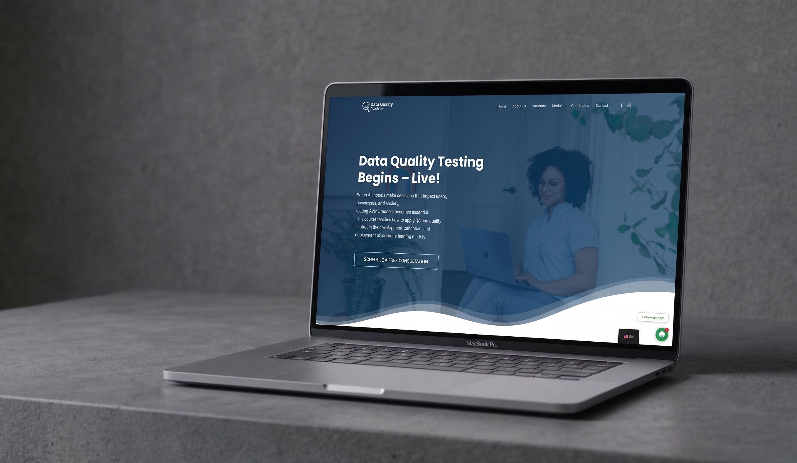
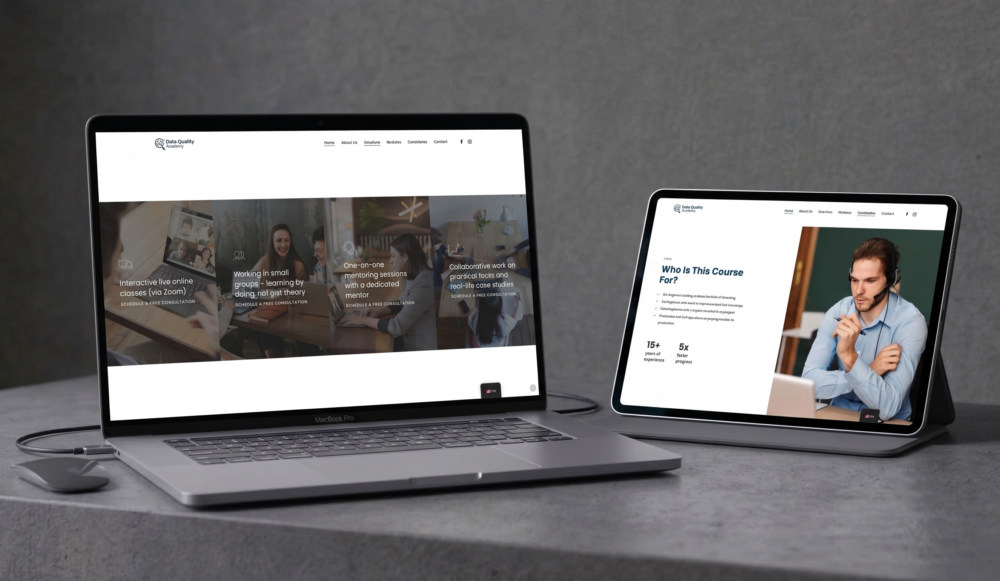
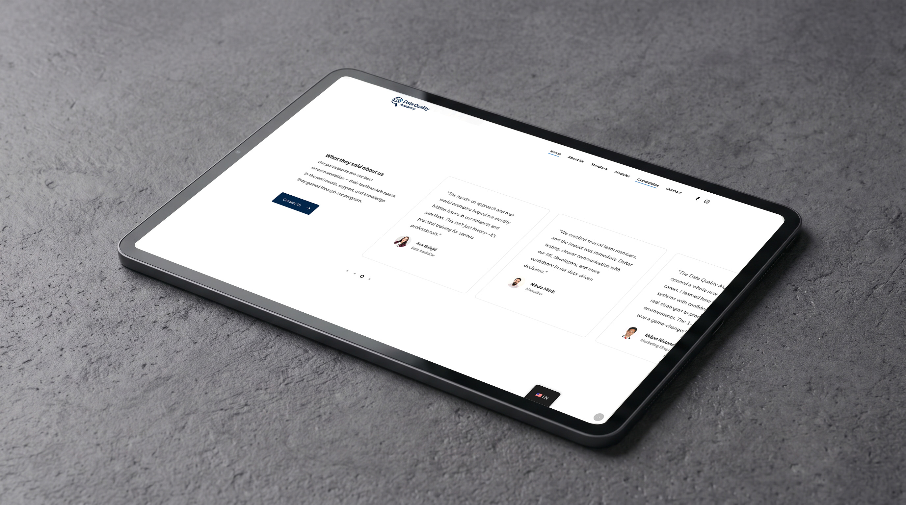
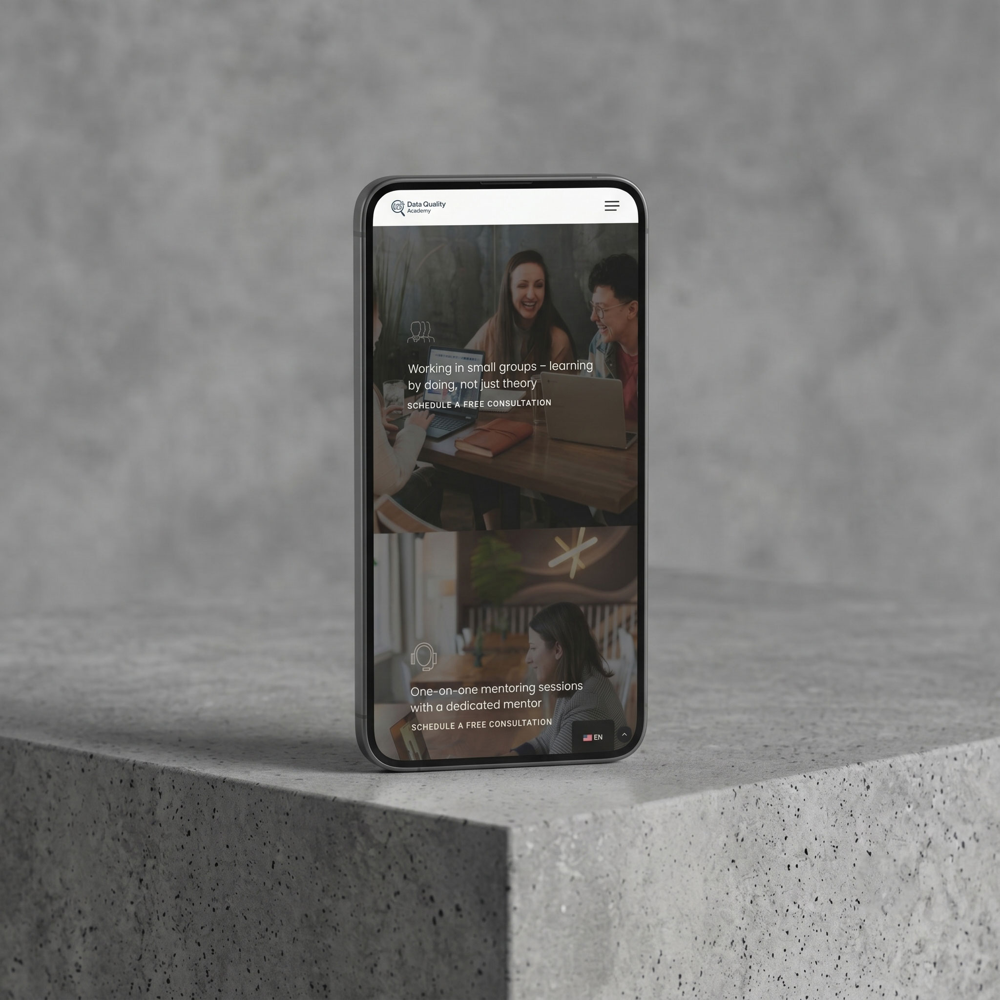
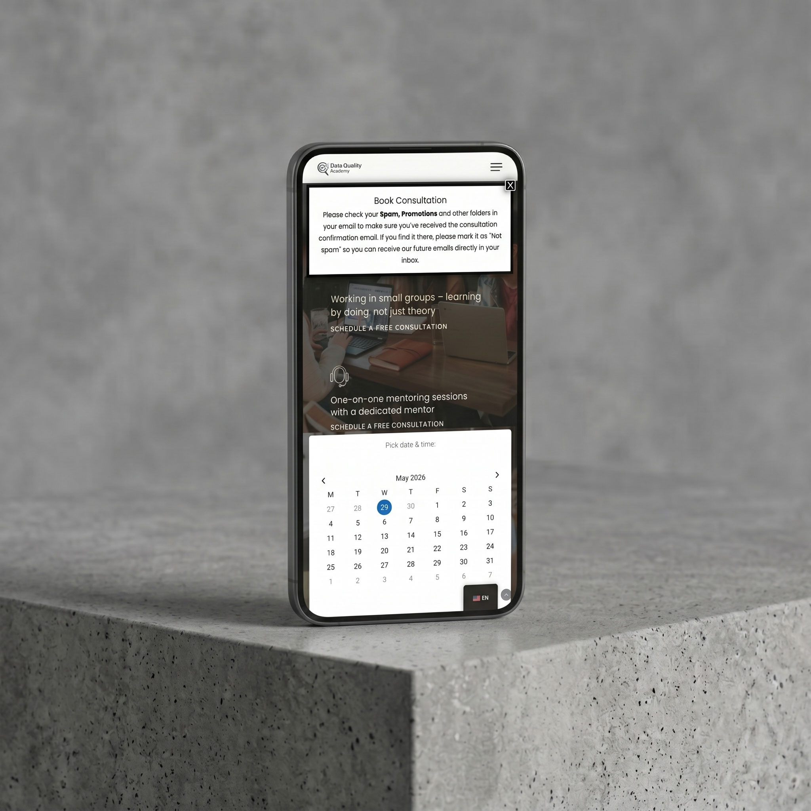
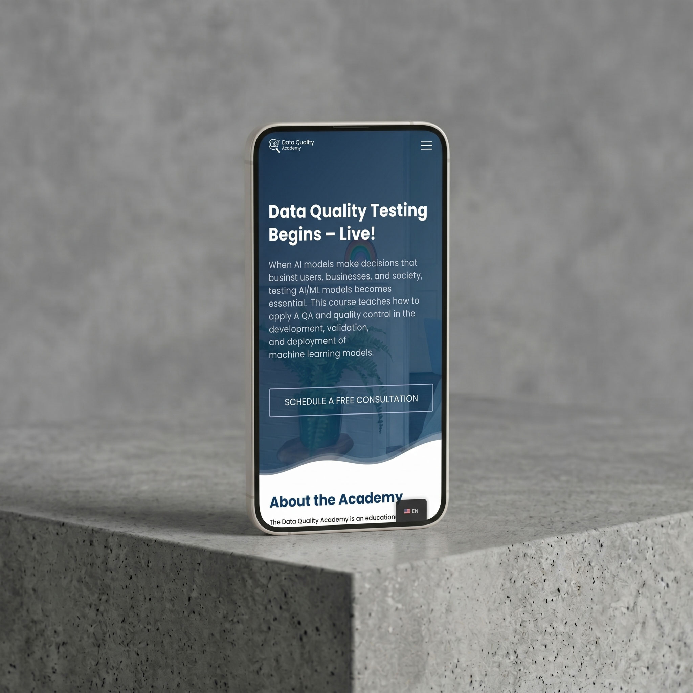
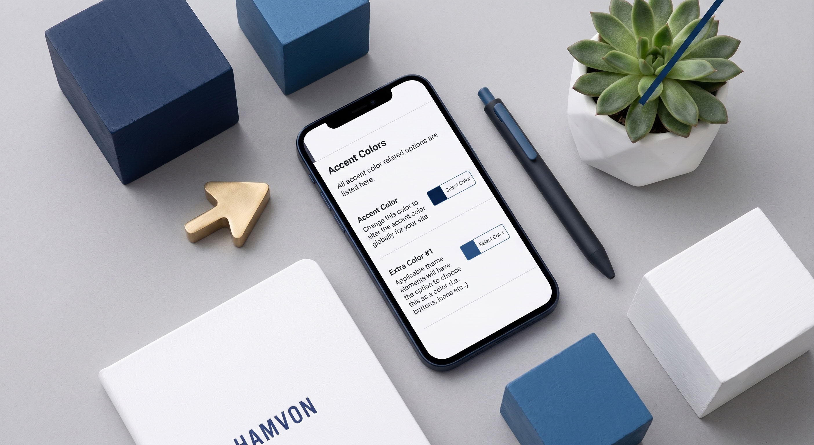

Data Quality Academy approached us with a clear goal: build a digital presence that reflected their practical, immersive teaching philosophy. They train QA engineers, ML professionals, and data analysts to work confidently in environments shaped by AI, and the website needed to communicate that seriousness from the first scroll.
The challenge was translating a highly technical educational program into a site that felt approachable yet credible. Every section, from the module breakdown to mentor bios, was designed to answer one question: why this academy, why now. The result is a lead generation platform that drives free consultation bookings and positions the academy as the go-to resource for AI testing education in the region.


The build moved through three focused phases, each grounded in the academy's core promise: practical, live training with dedicated mentors that genuinely changes careers.
We mapped the academy's target audience across three profiles: QA engineers pivoting into AI, ML engineers wanting better test coverage, and data teams entering production environments. Each profile shaped the copy hierarchy and conversion flow.
A precise, technical aesthetic was crafted to reflect the subject matter without feeling cold. The module structure, testimonial layout, and CTA placement were all built to guide a skeptical visitor toward booking a free consultation rather than bouncing.
Built on WordPress with WPBakery for flexible content management, a popup consultation booking flow, and full mobile optimization. Bilingual content in English and Serbian was structured from the ground up to serve both markets cleanly.



The full program covers everything from foundational AI concepts to production-level API and model behavior testing, built for professionals who learn by doing.
What AI is, why it matters to testers, the difference between traditional software and AI systems, key challenges like opaque model behavior and bias, and the tools you need to get started.
How to identify missing values, check data types, detect duplicates, flag outliers, and run consistency and validation checks on datasets that feed real ML models.
Train, validation, and test splits. Classification metrics including accuracy, precision, recall, F1, and ROC AUC. Confusion matrices and the formal approaches that separate good models from trustworthy ones.
Testing model behavior in production using AWS infrastructure. S3 data ingestion, Glue DataBrew profiling, Deequ validation triggered by Lambda, and CloudWatch plus SNS alerting when quality rules break.
Automated validation of API responses: schema validation, data integrity checks, business rule enforcement, edge case handling, and cross-source comparisons against databases and upstream services.
The Data Quality Academy course opened a whole new chapter in my QA career. I learned how to test AI and ML systems with confidence and apply real strategies to production environments. The individual mentorship sessions were a true turning point.
The curriculum was designed around the real roles that intersect with AI quality work, each profile bringing different gaps the program closes.
The website launched as the academy's primary lead capture tool, converting organic traffic into free consultation bookings and establishing a credible brand in a niche that is growing fast.
